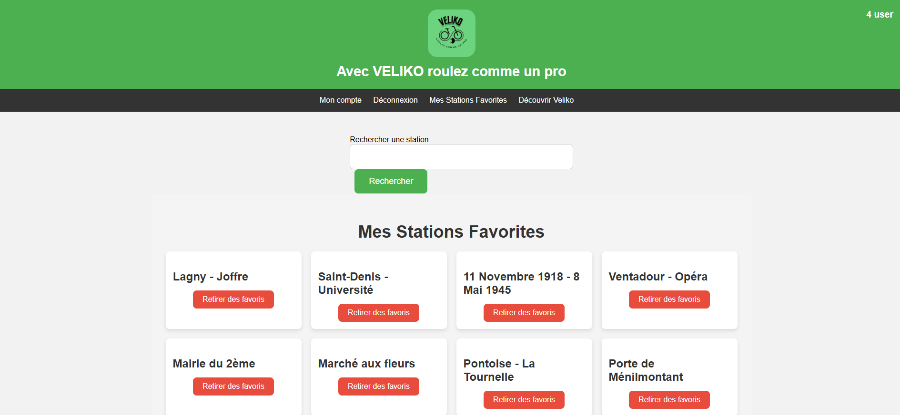

BTS SIO SLAM — Projet Fil Rouge
VÉLIKO — Localisation & Gestion de Vélopartage
Version
V4.0.0
Framework
Symfony
Base de données
MySQL
APIs
Véliko, OpenStreetMap
But du Projet
- Développement d’un site web permettant de localiser les stations Vélib et de consulter la disponibilité en temps réel.
- Gestion complète des comptes utilisateurs : inscription, connexion sécurisée et gestion des favoris.
- Sécurisation des données et conformité aux normes RGPD (suppression de compte, protection des données).
- Interface d'administration (CRUD) pour la gestion des utilisateurs et le monitoring du parc.


Évolution du Système
V1.0.0 — FONDATIONS
- • Intégration OpenStreetMap
- • Géolocalisation client
- • Bulles d'info dynamiques
- • Disponibilité temps réel
V2.0.0 — UTILISATEURS
- • Inscription & Authentification
- • Profil sécurisé (Bcrypt)
- • Gestion des Favoris
- • Conformité RGPD
V3.0.0 — ADMIN
- • Dashboard Administrateur
- • Gestion CRUD Utilisateurs
- • Blocage de comptes
- • Supervision du parc
V4.0.0 — DATA & STATS
- • Statistiques avancées
- • Graphiques & Listes
- • Réservation de vélos
- • Synchronisation API
Défis Techniques
Architecture de Données
Optimisation des services pour la persistance et la liaison entre les sessions, les favoris et les réservations.
Maîtrise du Framework
Apprentissage intensif de Symfony : routage complexe, contrôleurs de services et moteur de template Twig.
Acquis Professionnels
Travail collaboratif (GitHub / GitFlow)
Gestion avancée de bases de données SQL
Intégration d'API tierces RESTful
Sécurité & Conformité RGPD
Conclusion
En conclusion, le projet Véliko a été une expérience enrichissante qui m'a permis d'appliquer mes connaissances, d'acquérir de nouvelles compétences et de mieux appréhender les défis du développement web.